Episode 1: Lucky Lucky Memorial |
|
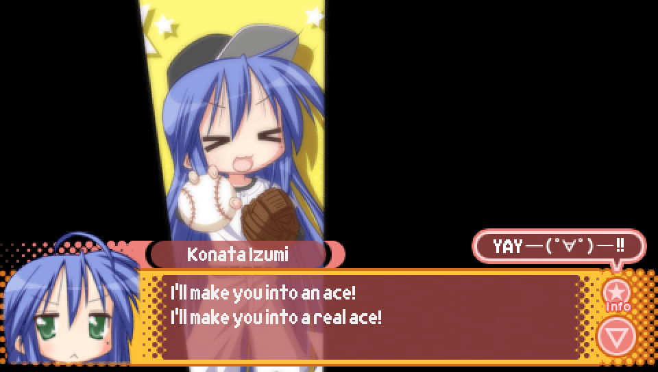
In the intro scene, when Konata is cosplaying as a pitcher,
she is quoting a line said by the character Abe Takaya from the
series "Big Windup!" in which he tells Ren Mihashi that he'll help him in becoming a great pitcher.
This can be seen in the first episode of the anime adaptation at 14:30.
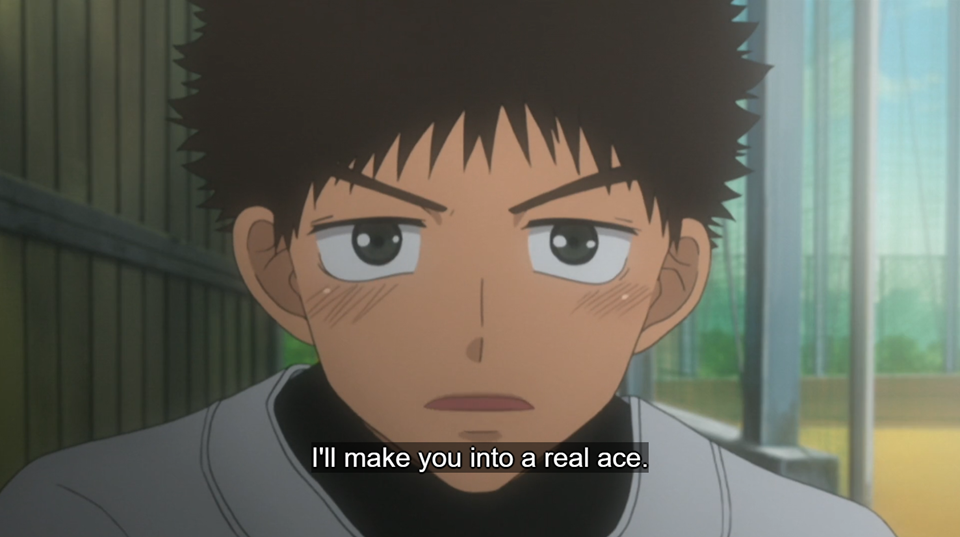
|
|
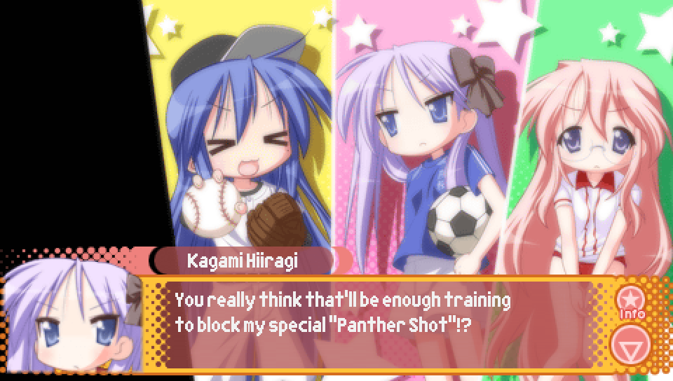
In the intro scene, when Kagami is cosplaying as a soccer player,
her "Panther Shot" is potentially in reference to the "hissatsu techniques"
from the soccer video game series "Inazuma Eleven".
While there is a hissatsu technique introduced in "Inazuma Eleven GO" called
"Panther Blizzard", that game released in December of 2011, which comes after
the release of Lucky Star: Ryouou Gakuen Outousai Portable, which released
in December of 2010.
Linked is a showcase of the Hissatsu Techniques in the original Inazuma Eleven game,
originally released in Japan in August of 2008: https://www.youtube.com/watch?v=LfPC_xB3ick
|
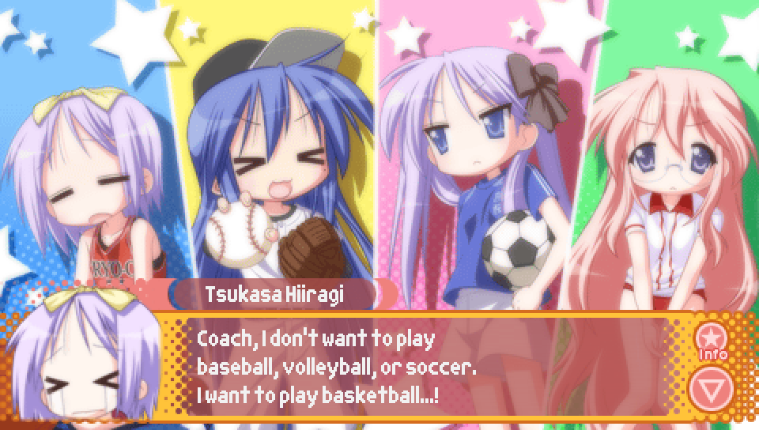
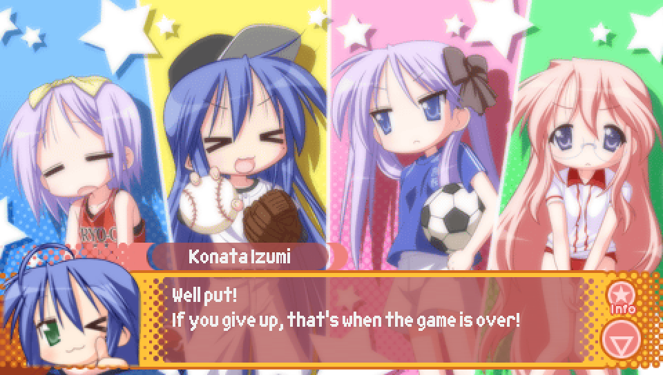
In the intro scene, when Tsukasa is cosplaying as a basketball player,
these two lines are in reference to an iconic scene from the manga "Slam Dunk".
In the anime adaptation of the series, both lines can be seen during Episode 27
from 18:00 to 19:30
https://www.youtube.com/watch?v=5GIyyxM87qQ&t=1080s

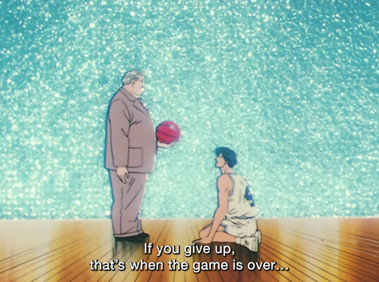
|
|
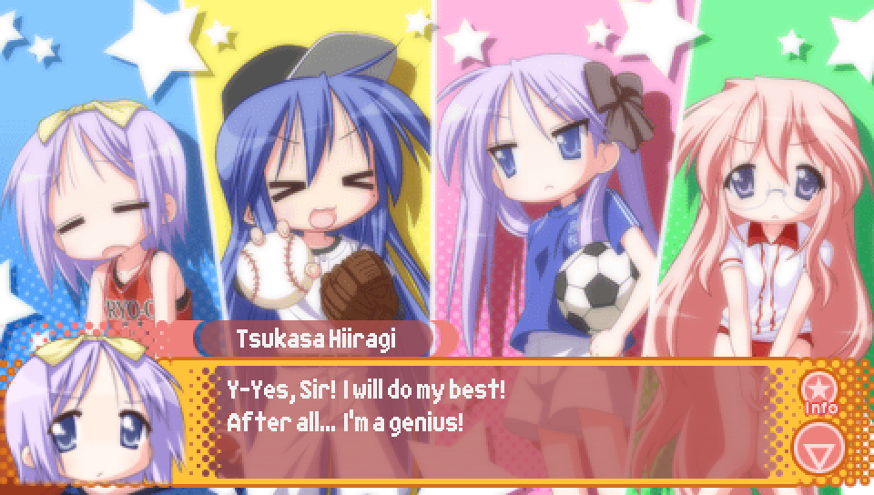
Immediately following the above "Slam Dunk" reference,
Tsukasa quotes the character Sakuragi Hanamichi from "Slam Dunk",
who is known for referring to himself as a genius.
The specific wording used by Tsukasa in the Japanese matches a notable panel
from "Slam Dunk: 10 Days After", a short sequel to "Slam Dunk" that was released in 2004.
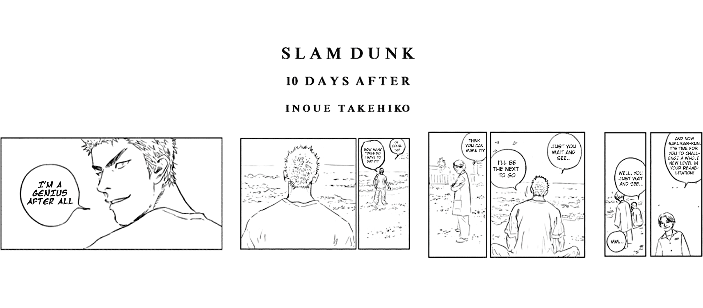
|
|
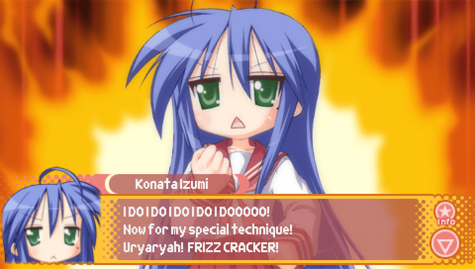
In the intro scene, when Konata is trying to summon the power of
"the spirits of the stars", the "Frizz Cracker" ability she uses
is in direct reference to an ability of the same name from the "Dragon Quest" series.
https://www.youtube.com/watch?v=o7Mgs-N2iV8&t=20s
|
|
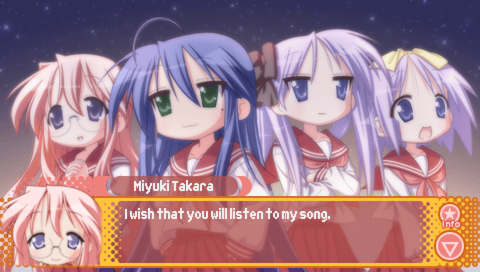
In the intro scene, when Miyuki makes a wish "that you will listen to my song",
it is possibly in reference to Miyuki's voice actress, Aya Endou, who also voiced
the character "Sheryl Nome" from "Macross Frontier", who is a singer.
Ironically, Aya Endou does not voice Sheryl when she is singing, with that role
instead being performed by Japanese artist May'n.
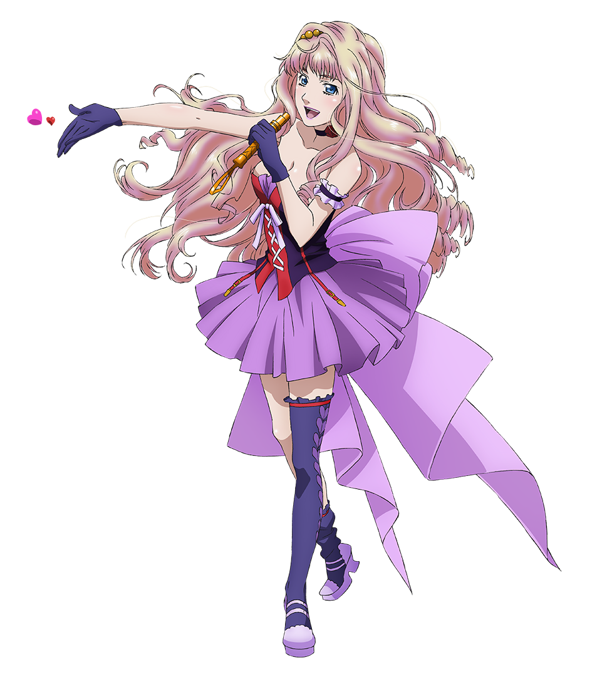
|
|
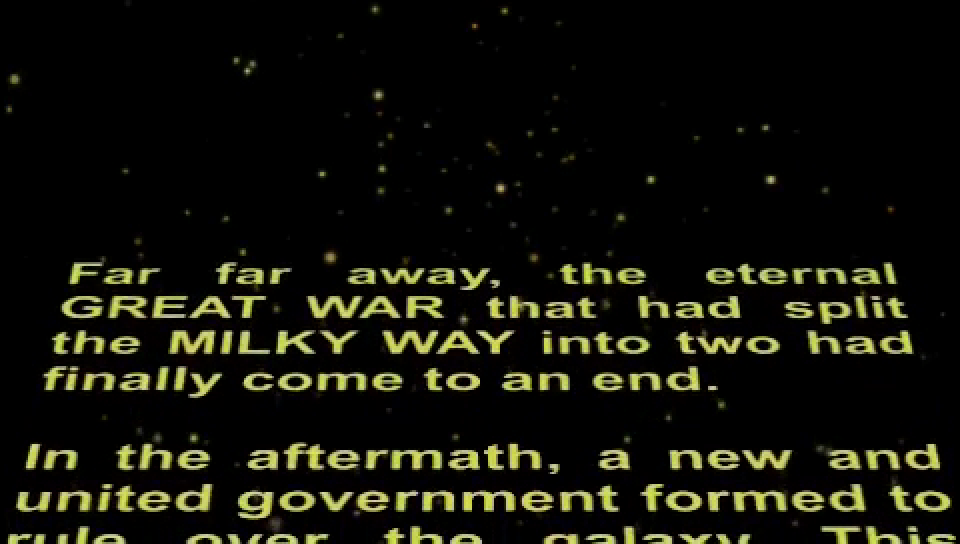
Though it likely goes without saying, the text crawl
featured at the start of the cutscene following the intro scene
is in reference to the text crawls that appear at the beginning
of movies in the "Star Wars" series.
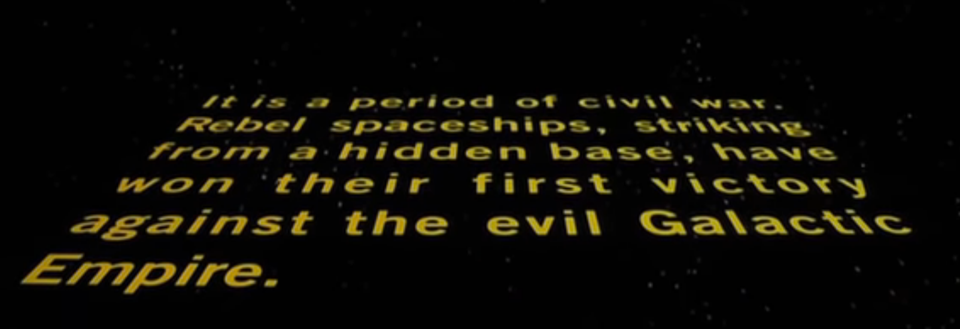
|
|
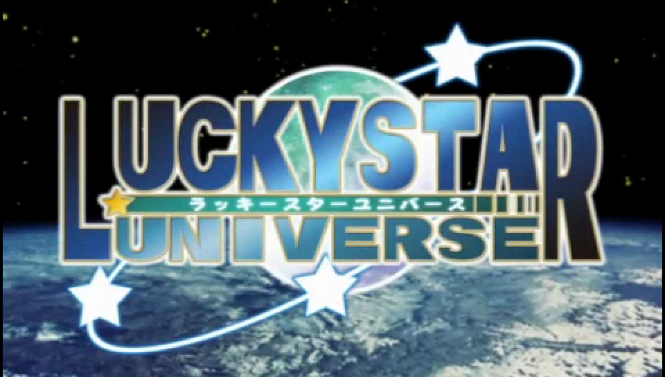
The name "Lucky Star Universe" is a reference to the RPG "Phantasy Star Universe"
developed and published by Sega in 2006.
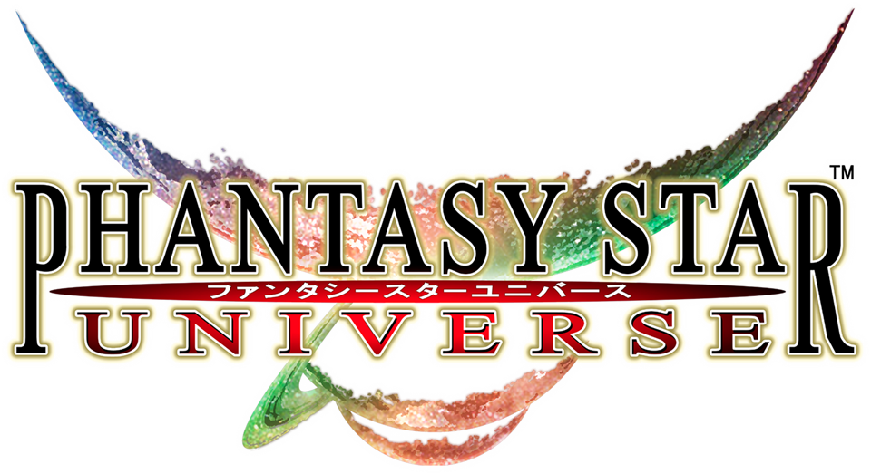
|
|